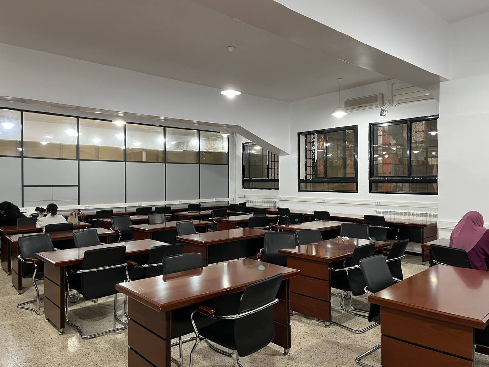
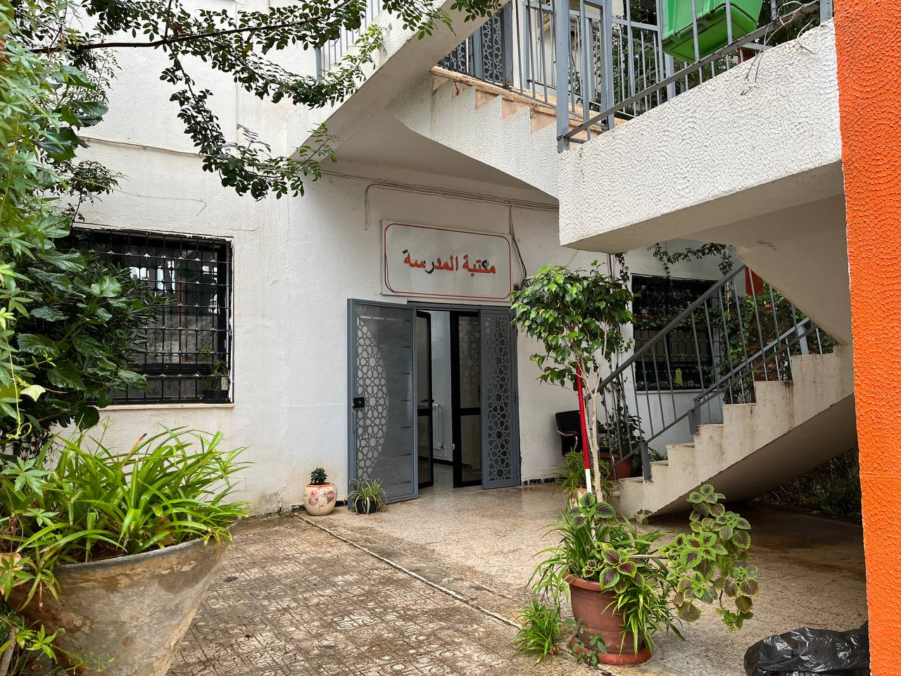

تتميز المكتبة المركزية للمدرسة العليا للأشغال العمومية (ENSTP) ببيئتها الهادئة والمحفزة على التحصيل العلمي والبحث الأكاديمي. تحاط المكتبة بمشاتل ومساحات خضراء توفر الجو المثالي للتركيز، وتضم داخلها قاعات مطالعة واسعة ومجهزة بأحدث الطاولات المريحة، وأجهزة التكييف والإضاءة المناسبة للطلبة.
تضع المكتبة تحت تصرف الطلاب والباحثين آلاف المراجع العلمية المتخصصة في الهندسة المدنية، المنشآت الفنية، ميكانيكا التربة، بالإضافة إلى أحدث مذكرات التخرج وبحوث المهندسين السابقين.
تتيح إدارة المدرسة لكل طالب مسجل بانتظام إمكانية الانخراط في المكتبة واستعارة الكتب والمراجع مجاناً طوال الموسم الدراسي. إليك خطوات وملفات التسجيل:
شهادة تسجيل أصلية للسنة الدراسية الحالية تثبت انتماءك للمدرسة.
صورتان شخصيتان حديثتان لاستصدار بطاقة القارئ الخاصة بالمكتبة.
ملء استمارة المعلومات والتوقيع على النظام الداخلي للمكتبة لضمان الحفاظ على الكتب وإرجاعها في المواعيد.
جولة بصرية في مدخل وقاعات المطالعة المجهزة بالمكتبة:

